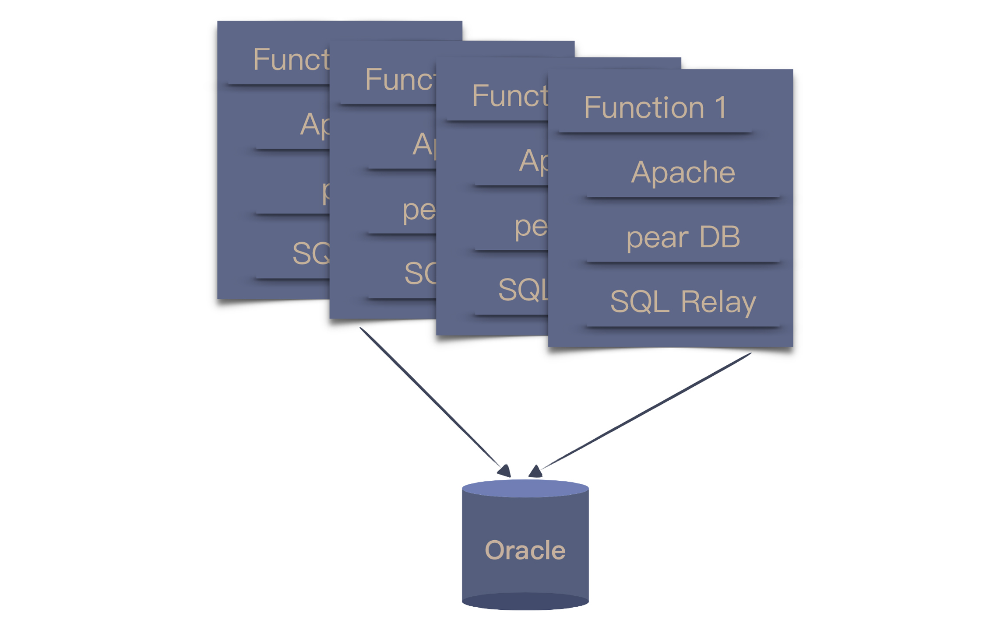

36 | 为什么总有人觉得5万块钱可以做一个淘宝？
今天，我们从软件行业的一个段子说起。
甲方想要做个电商网站，作为乙方的程序员问：“你要做个什么样的呢？”甲方说：“像淘宝那样就好。”程序员问：“那你打算出多少钱？”甲方想了想，“5万块钱差不多了吧！”
这当然是个调侃客户不懂需求的段子，但你有没有想过，为什么在甲方看来并不复杂的系统，你却觉得困难重重呢？
因为你们想的根本不是一个东西。
在客户看来，我要的不就是一个能买东西的网站吗？只要能上线商品，用户能看到能购买不就好了，5万块钱差不多了。
而你脑中想的却是，“淘宝啊，那得是多大的技术挑战啊，每年一到‘双11’，那就得考虑各种并发抢购。淘宝得有多少程序员，5万块你就想做一个，门都没有。”
如果放在前面“沟通反馈”的模块，我可能会讲双方要怎么协调，把想法统一了。但到了“自动化”的模块，我想换个角度讨论这个问题：系统是怎么变复杂的。
淘宝的发展历程
既然说到了淘宝，我们就以一些公开资料来看看淘宝的技术变迁过程。2013年，子柳出版了一本《淘宝技术这十年》，这本书里讲述了淘宝是怎么一步步变化的。
按照书中的说法，第一个淘宝是“买来的”，买的是一个叫做 PHPAuction 的系统，即便选择了最高配，也才花了2000美元左右。这是一个采用 LAMP 架构的系统，也就是 Linux + Apache + MySQL + PHP，这在当年可是典型的开源架构。
团队所做的主要就是一些订制化工作，最大的调整就是将单一数据库的读写进行了拆分，变成了一个主库和两个从库。这种结构在今天来看，依然是很多团队做调整的首选。

当访问量和数据量不断提升，MySQL 数据库率先扛不住了。当年的 MySQL 默认采用的是 MyISAM 引擎，写数据的时候会锁住表，读也会被卡住，当然，这只是诸多问题中的一个。
2003年底，团队将 MySQL 换成了 Oracle。由于 Oracle 的性能要好上许多，主从的数据库架构又改回了单一数据库。但由于 PHP 访问数据库的缺省方案没有连接池，只好找了开源的 SQL Relay，这也为后续的改进埋下了伏笔。

当数据量继续加大，本地存储就已经无法满足了，只能通过引入网络存储解决问题。数据量进一步增大之后，存储节点一拆再拆，依然不能解决问题，淘宝就踏上了购买小型机的道路。
IBM 的小型机、Oracle 的数据库和 EMC 的存储，这个阶段就踏上了 IOE 之路。
2004年初，SQL Relay 已经成了一个挥之不去的痛点，于是，只能从更根本的方案上动脑筋：更换程序设计语言。作为当时的主流，Java 成了不二之选。
替换的方案就是给业务分模块，一块一块地替换。老模块只维护，不增加新功能，新功能只在新模块开发，新老模块共用数据库。新功能上线，则关闭老模块对应功能，所有功能替换完毕，则老模块下线。
淘宝的数据量继续增长，单台 Oracle 很快到了上限，团队采用了今天常见的“分库分表”模式，但“分库分表”就会带来新的问题，跨数据库的数据怎么整合？于是，打造出了一个 DBRoute，用以处理分库的数据。
但是，这种做法也带来了一个新的问题，同时连接多个数据库，任何一个数据库出了问题，都会导致整个网站的故障。
当淘宝的数据量再次增长，每次访问都到了数据库，数据库很难承受。一个解决方案就是引入缓存和 CDN（Content Delivery Network，内容分发网络），这样，只读数据的压力就从数据库解放了出来。
当时的缓存系统还不像今天这么成熟，于是，团队基于一个开源项目改出了一个。他们用的 CDN 最开始是一个商用系统，但流量的增加导致这个系统也支撑不住了，只好开始搭建自己的 CDN。
后来，因为 CDN 要消耗大量的服务器资源，为了降低成本，淘宝又开始研发自己的低功耗服务器。
随着业务的不断发展，开发人员越来越多，系统就越来越臃肿，耦合度也逐渐提升，出错的概率也逐渐上升。这时，不得不对系统进行分解，将复用性高的模块拆分出来，比如，用户信息。
业务继续发展，拆分就从局部开始向更大规模发展，底层业务和上层流程逐渐剥离，并逐渐将所有业务都模块化。
有了一个相对清晰地业务划分之后，更多的底层业务就可以应用于不同的场景，一个基础设施就此成型，新的业务就可以使用基础设施进行构建，上层业务便如雨后春笋一般蓬勃发展起来。
在这个过程中，有很多技术问题在当时还没有好的解决方案，或者是不适合于它们所在的场景。所以，淘宝的工程师就不得不打造自己的解决方案，比如：分布式文件系统（TFS）、缓存系统（Tair）、分布式服务框架（HSF）等等。还有一些技术探索则是为了节省成本，比如，去 IOE 和研发低功耗服务器等等。
我这里以淘宝网站的发展为例，做了一个快速的梳理，只是为了让你了解一个系统的发展，如果你有兴趣了解更多细节，不妨自己找出这本书读读。当然，现在的淘宝肯定比这更加完整复杂。
同样的业务，不同的系统
为什么我们要了解一个系统的演化过程呢？因为作为程序员，我们需要知道自己面对的到底是一个什么样的系统。
回到我们今天的主题上，5万块钱可以不可以做一个淘宝？答案是，取决于你要的是一个什么样的系统。最开始买来的“淘宝”甚至连5万块钱都不用，而今天的淘宝和那时的淘宝显然不是一个系统。
从业务上说，今天的淘宝固然已经很丰富了，但最核心的业务相差并不大，无非是卖家提供商品，买家买商品。那它们的本质差别在哪呢？
回顾上面的过程，你就可以看到，每次随着业务量的增长，原有技术无法满足需要，于是，就需要用新的技术去解决这个问题。这里的关键点在于：不同的业务量。
一个只服务于几个人的系统，单机就够了，一个刚刚入行的程序员也能很好地实现这个系统。而当业务量到达一台机器抗不住的时候，就需要用多台机器去处理，这个时候就必须考虑分布式系统的问题，可能就要适当地引入中间件。
而当系统变成为海量业务提供服务，就没有哪个已经打造好的中间件可以提供帮助了，需要自己从更底层解决问题。
虽然在业务上看来，这些系统是一样的，但在技术上看来，在不同的阶段，一个系统面对的问题是不同的，因为它面对业务的量级是不同的。更准确地说，不同量级的系统根本就不是一个系统。
只要业务在不断地发展，问题就会不断出现，系统就需要不断地翻新。我曾听到一个很形象的比喻：把奥拓开成奥迪。
你用对技术了吗？
作为一个程序员，我们都知道技术的重要性，所以，我们都会努力地去学习各种各样的新技术。尤其是当一个技术带有大厂光环的时候，很多人都会迫不及待地去学习。
我参加过很多次技术大会，当大厂有人分享的时候，通常都是人山人海，大家都想学习大厂有什么“先进”技术。
知道了，然后呢？
很多人就想迫不及待地想把这些技术应用在自己的项目中。我曾经面试过很多程序员，给我讲起技术来滔滔不绝，说什么自己在设计时考虑各种分布式的场景，如果系统的压力上来时，他会如何处理。
我就好奇地问了一个问题，“你这个系统有多少人用？”结果，他做的只是一个内部系统，使用频率也不高。
为了技术而技术的程序员不在少数，过度使用技术造成的结果就是引入不必要的复杂度。即便用了牛刀杀鸡，因为缺乏真实场景检验，也不可能得到真实反馈，对技术理解的深度也只能停留在很表面的程度上。
在前面的例子中，淘宝的工程师之所以要改进系统，真实的驱动力不是技术，而是不断攀升的业务量带来的问题复杂度。
所以，评估系统当前所处的阶段，采用恰当的技术解决，是我们最应该考虑的问题。
也许你会说，我做的系统没有那么大的业务量，我还想提高技术怎么办？答案是到有好问题的地方去。现在的 IT 行业提供给程序员的机会很多，找到一个有好问题的地方并不是一件困难的事，当然，前提条件是，你自己得有解决问题的基础能力。
总结时刻
今天，我以淘宝的系统为例，给你介绍了一个系统逐渐由简单变复杂的发展历程，希望你能认清不同业务量级的系统本质上就不是一个系统。
一方面，有人会因为对业务量级理解不足，盲目低估其他人系统的复杂度；另一方面，也有人会盲目应用技术，给系统引入不必要的复杂度，让自己陷入泥潭。
作为拥有技术能力的程序员，我们都非常在意个人技术能力的提升，但却对在什么样情形下，什么样的技术更加适用考虑得不够。采用恰当的技术，解决当前的问题，是每个程序员都应该仔细考虑的问题。
如果今天的内容你只能记住一件事，那请记住：用简单技术解决问题，直到问题变复杂。
最后，我想请你回想一下，你身边有把技术做复杂而引起的问题吗？欢迎在留言区写下你的想法。
感谢阅读，如果你觉得这篇文章对你有帮助的话，也欢迎把它分享给你的朋友。